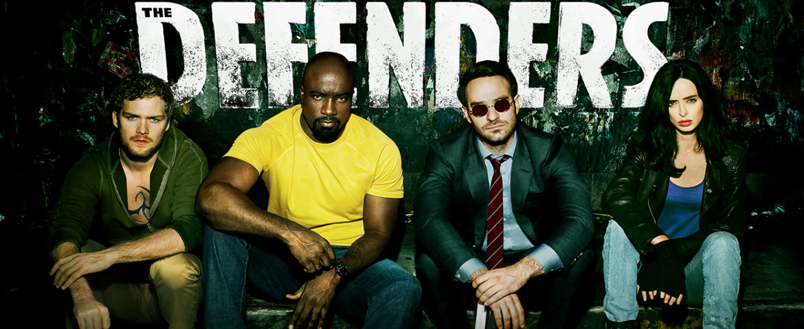

Os Defensores: tudo que você precisa saber antes de assistir a série
Demolidor
,
Jessica Jones
,
Luck Cage
e
Punho de Ferro
unem forças contra inimigos em comum enquanto uma conspiração sinistra ameaça Nova York.